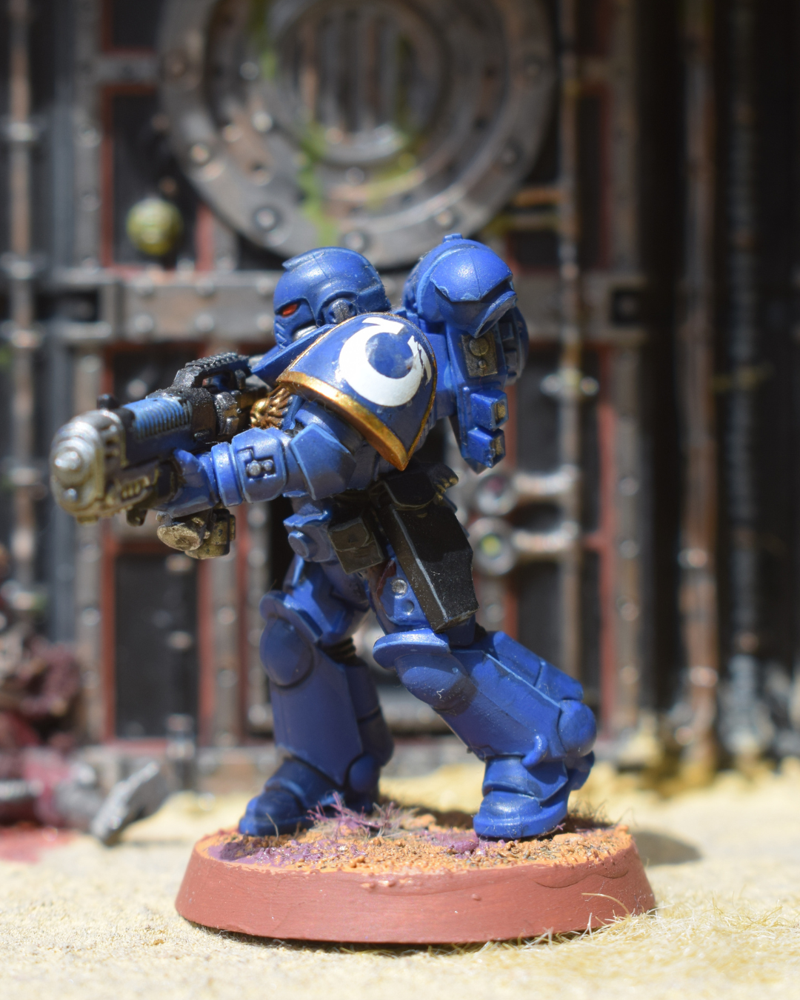
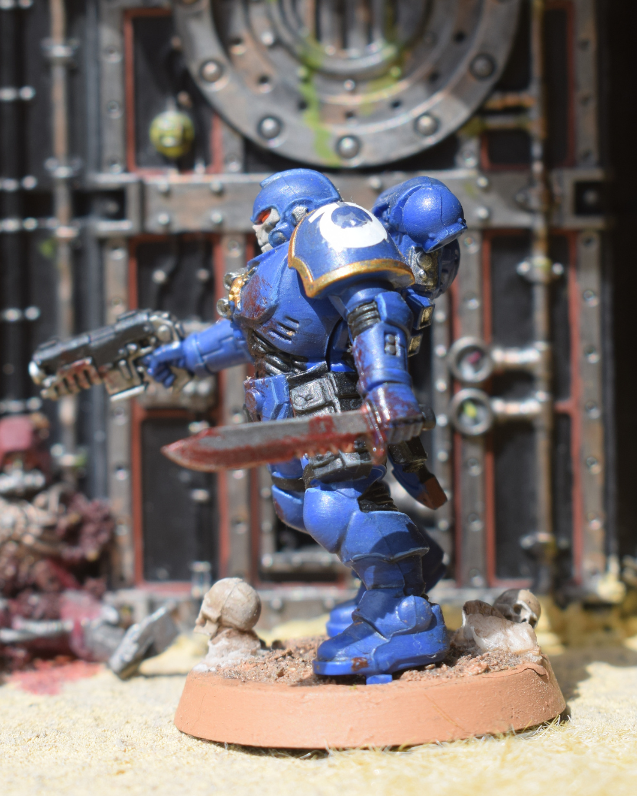
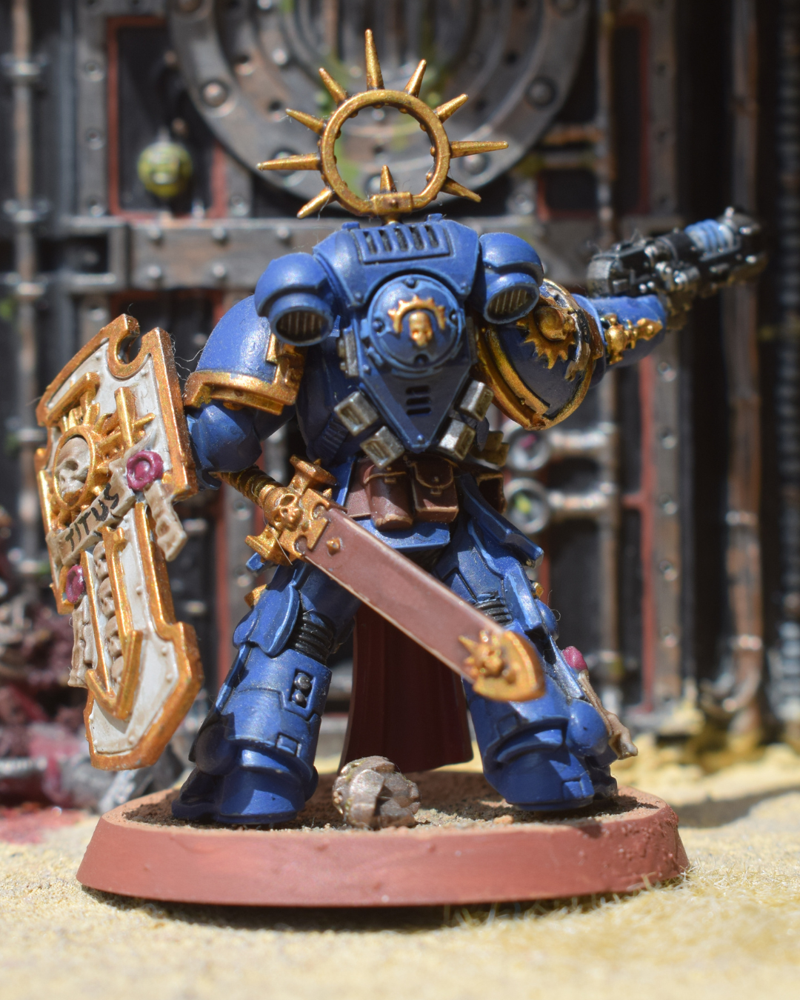

Base de color negra mítica de los capellanes del milenio 41, añadí historia a la base con un servocráneo y casco de berserker.
Exterminador en Vanguardia
Con toque sangriento, sigue el estilo Ultramarines; bólter tormenta y efectos de desgaste en la armadura.
Exterminador Ciclónida
Temido exterminador con símbolos de quemaduras en la punta del rifle tras muchas salvas.
Exterminador Revientacráneos
Puños temidos, un golpe de Macragge y queda pulverizado el rival; peana trabajada y efectos de impacto.

Hellblaster
Vehículos como objetivo preferido; cartucheras negras y detalle en cargas de fusión.
Hellblaster
Menos desgastado; ideal para mantener distancia y controlar el tablero con potencia de fuego.
Intercessor de Asalto
Buscan una muerte gloriosa por el Primarca, por ello sus sierras nunca se limpian pues son los primeros en arrancar la carga
contra los herejes.
Intercessor de Asalto
Nunca van al campo de batalla sin granadas, y sus armaduras están manchadas con multitud de bajas.
Intercessor de Asalto
A la espera de la siguiente gran batalla, los intercessor buscan su siguiente víctima para llevarle al Primarca. Como siempre
sucios de la batalla.

Reiver
Mi segunda unidad pintada de los Ultramarines con tan solo 13 años. Su toque gótico me maravilló y ahora sus cráneos llevan
la victoria por el Primarca y el Emperador.
Reiver
Aunque son monopose y quedan raras, la calavera sigue siendo muy llamativa y los degradados de la misma hacen que el mismísimo
Horus les tenga miedo.
Sargento Reiver
Mi primera vez con piel, hice lo que pude pero tengo que seguir mejorando con práctica. El color rojo para los sargentos o tenientes
siempre son necesarios. Las peanas de los reiver están a conciencia con cráneos de los xenos más peligrosos de la galaxia.

Teniente Titus
Aunque no es la miniatura oficial del teniente Titus, siempre me atrajo su nombre desde que jugué a la primera entrega. Su aura
su escudo, el casco hecho "freehand"... ¡Por el Emperador!
Teniente Laureado
Sigo teniendo que mejorar mi nivel de pintura a la hora de caras y piel, pero su aura románica con la corona me llamó la atención.
En principio era dorado, pero el verde era más para mi ejército personal.